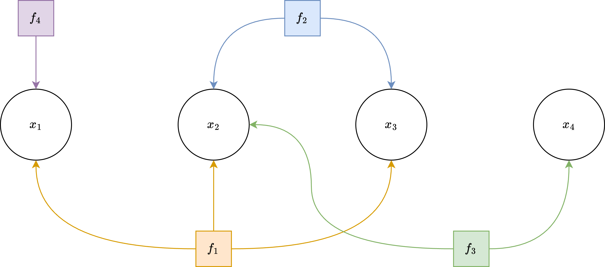
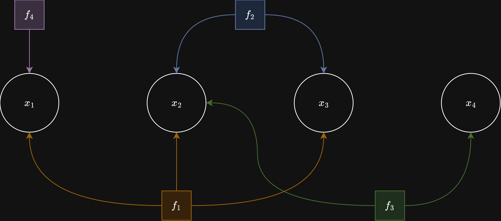

Introduction#
Purpose#
cuNLS is a CUDA/C++ library for solving nonlinear least-squares problems on the GPU. It is designed around batched factor evaluation, sparse Jacobian assembly, and sparse linear solvers tailored for large scale minimization problems.
Nonlinear least-squares problems#
At a high level, cuNLS solves optimization problems of the form:
where:
\(x\) is the optimization variable (often living on a manifold),
\(f_i(x)\) are residual/error functions,
\(\rho_i(\cdot)\) are optional robust loss functions,
\(\left\|v\right\|^2_{\Sigma} = v^T \Sigma^{-1} v\) is the Mahalanobis norm.
Using a square-root information matrix \(R_i\) such that \(\Sigma_i^{-1} = R_i^T R_i\), each term can be rewritten as:
This is exactly why cuNLS has a dedicated InformationFactorBatch: it applies
this whitening step directly to residuals and Jacobians.
To solve the nonlinear problem, cuNLS linearizes around the current estimate \(x_0\):
Stacks all blocks into a global Jacobian \(J\) and vector \(b\), then solves a sparse linearized system (Gauss-Newton / Levenberg-Marquardt):
with normal equations:
and updates:
where \(\oplus\) is the manifold plus operation implemented by state batches (for Euclidean states, this reduces to simple addition).
Factor Graphs#
A common way to set up nonlinear least-squares problems is to create a factor graph: a graph where nodes represent variables and edges represent constraints between them.


Example factor-graph structure used to represent sparse nonlinear least-squares problems.
The constraints between variables are called factors, which are nonlinear functions representing mean error. Each factor is also associated with a covariance matrix. Together the mean and the covariance represent multivariate normal distribution for a given factor.
This way factor graph is a probabilistic graphical model, which represents a joint probability distribution of all factors
and the MAP estimate is:
For Gaussian-like factors:
maximizing the posterior is equivalent to minimizing the sum of squared (and optionally robustified) residuals.
cuNLS allows setting up variables and factors in batches for higher GPU utilization.
A FactorBatch is a collection of same type factors that are connected to a list of StateBatch objects —
collections of same type variables.
The Problem is a collection of FactorBatch objects and connected StateBatch objects, that together form the Factor Graph.
Core concepts#
State batches store optimization variables on manifolds (for example,
SE3StateBatchfor rigid transforms,VectorStateBatch<Dim>for Euclidean vectors).Factor batches compute residuals and Jacobians in parallel for many observations.
Problems connect factors to states via device pointers.
Minimizers (
GaussNewtonMinimizer,LevenbergMarquardtMinimizer) solve for state updates.Loss functions robustify residuals to reduce outlier influence.
High-level solve flow#
Allocate state data on the GPU.
Wrap state memory in one or more
StateBatchobjects.Build one or more
FactorBatchobjects from observations.Add state batches and factor batches to a
Problem.Run a minimizer and inspect
MinimizerSummary.
Supported optimization patterns#
Pose graph optimization with between factors.
Bundle-adjustment style reprojection optimization.
ICP-like alignment (point-to-point / point-to-plane factors).
Custom user-defined factors through
FactorBatch/SizedFactorBatch.
See Tutorial for complete working pipelines and API Reference for class-level API details.